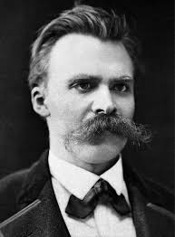
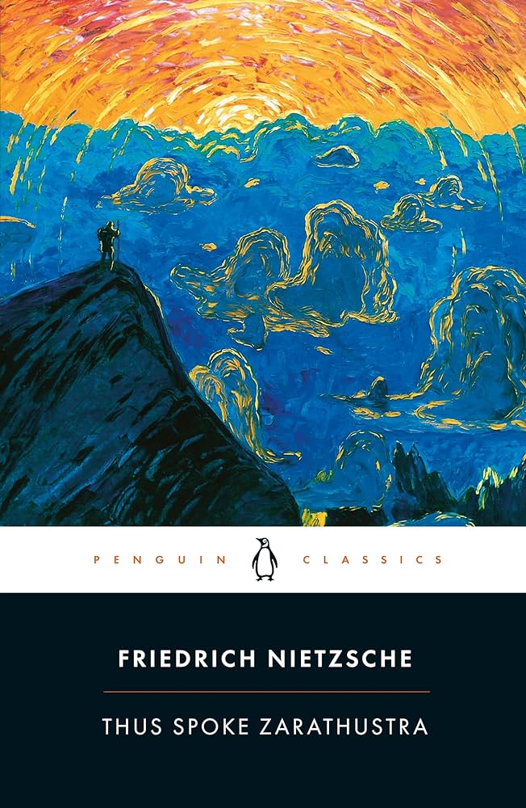

ესე იტყოდა ზარატუსტრა
ინფორმაცია წიგნზე
ავტორი: ფრედრიხ ნიცშე
ჟანრი: ნიჰილიზმი, ფსიქოლოგიური, ფილოსოფიური
გამოშვების თარიღი: 1883 წელი
აღწერა:
ასე ლაპარაკობდა ზარატუსტრა დასავლური ლიტერატურის ფუნდამენტური ნაწარმოებია და ფართოდ ითვლება ფრიდრიხ ნიცშეს შედევრად. იგი მოიცავს გერმანელი ფილოსოფოსის ცნობილ განხილვას ფრაზის "ღმერთი მკვდარია" და ასევე მისი კონცეფცია სუპერმენის შესახებ. ნიცშე ხაზს უსვამს თავის ნებისყოფას ძალაუფლების თეორიას და გვერდებს უთმობს ქრისტიანული აზროვნების კრიტიკას, კერძოდ, ქრისტიანობის განმარტებას სიკეთისა და ბოროტების შესახებ.
ფრიდრიხ ვილჰელმ ნიცშე (დოქტორი, ფილოლოგია, ლაიფციგის უნივერსიტეტი, 1869) იყო მე-19 საუკუნის ბოლოს გერმანელი ფილოსოფოსი, რომელიც დაუპირისპირდა ქრისტიანობის საფუძვლებს და ტრადიციულ ზნეობას. მას აინტერესებდა ინდივიდუალური და კულტურული ჯანმრთელობის გაძლიერება და სჯეროდა ცხოვრების, შემოქმედების, ძალაუფლებისა და იმ სამყაროს რეალობის, რომელშიც ჩვენ ვცხოვრობთ, ვიდრე სამყაროს მიღმა მდებარე სამყაროს. მის ფილოსოფიაში ცენტრალური ადგილი უკავია „სიცოცხლის დადასტურების“ იდეას, რომელიც გულისხმობს ყველა დოქტრინის კითხვის ნიშნის ქვეშ დგომას, რომელიც შლის სიცოცხლის ექსპანსიურ ენერგიას, რაც არ უნდა იყოს სოციალურად გავრცელებული ეს შეხედულებები. ხშირად მოიხსენიებენ, როგორც ერთ-ერთ პირველ ეგზისტენციალისტ ფილოსოფოსს სორენ კირკეგარდთან ერთად (1813–1855).
ავტორის ხელმოწერა: